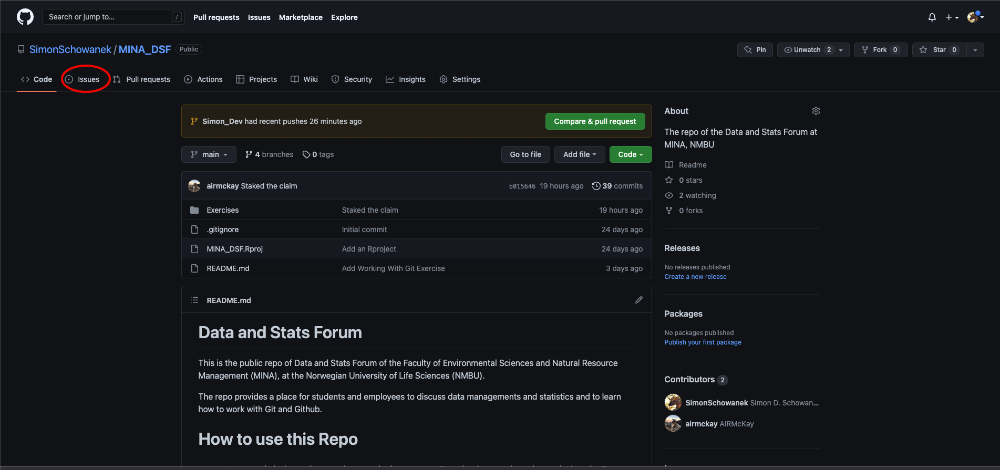
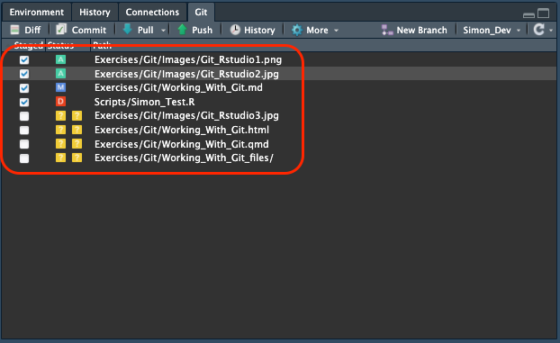

Git and Github Workshop
Github Workshop Exercise
This exercise will help you get familiar with Git and Github. In this exercise you will learn
- Install Git and all the tools to work with it.
- Learn how to use Issues on GitHub.
- Learn how to clone an existing repository from Github
- Learn how to create your own repository
- Learn how to make changes to repositories using GitKraken and Rstudio, including:
- how to commit, push and pull
- how to deal with merge conflicts
- How to integrate Git and Rstudio.
This workshop is heavily based on the information provided in https://happygitwithr.com. For detailed information, I recommend you visit this website.
0. Preparation
Before starting this tutorial make sure that you have
- a recent version of R
- a recent version of Rstudio
- a GitHub account
- downloaded Git (if you use an NMBU computer you can download it easily via the software centre). If not, follow the following instructions.
- downloaded GitKraken
1. Using the Issues page in Github
Issues are a useful collaboration feature from Github. This exercise teaches you how to use “Issues”.
- Go to the MINA DSF Github and click on the “Issues” tab. This will bring you to the “Issues” page. Issues are the place on GitHub where collaboration happens. They are posts, where collaborators can discuss problems, track bugs, or work on tasks together.
- You an click on any issue to see the discussion. Click on the “Here is an example issue.” to see the discussion within. Leave a comment in the issue. You can tag collaborators using the “@” sign. You can also edit your comment using Markdown. You can also create a new issue.
- The panel on the right provides some tools to organise group work. Clicking on “assignees” will let you assign people responsible for solving of keeping track of an issue. Clicking on “labels” lets you label issues, which can help you keep an overview of which sorts of problems exist. If you want to create a new label scroll down through the list of labels and click on “edit labels”. This will take you to a new window where you can modify labels however you want. You can also add issues to projects and milestones but we will not explore these features today.
- When is issue is solved or no longer relevant, you can close it by clicking on “close issue” at the bottom. This will archive the issue. It will now disappear from the issues list.
2. Clone an existing repository (and make changes) using GitKraken.
2.1 Creating the directory
In this section you will learn how to clone an existing directory to your computer. In this case you will clone the MINA DSF Github. This repository is meant to be a testing ground, so you do not have to worry about messing anything up.
- Go to the MINA DSF Github
- Press the arrow next to the green “code” button
- Copy link (use the https link)
- Go to Rstudio
- Select file > new project > version control > git
- Then
- Past the URL
- Create a directory name
- Select directory location (Make sure you remember where you save the directory. This will become imporant)
- Create Project
- Go to the directory location and check that the local directory has been created properly.
Well done. You have now copied the directory to your computer. This is the local directory in which you can make changes. If you want to you can now start working in the repository.
2.2 Opening the directory in GitKraken
Now that you have created the directory, you will want to open it in GitKraken. To open the directory in GitKraken:
Open GitKraken
If this is your first repository, a repository manager should appear. If this does not happen, select file > open repo.
Select Open a Repository and select the directory in which you have placed the local repository and press open. A GitKraken interface with many lines should now appear. This interface shows the various branches that different people are working on and how they relate to each other.
2.3 Making changes to the directory
Once you can open the directory in GitKraken you will want to make changes to it. Here you will learn how to make changes to a local directory and learn how to how to push them to a remote repository (i.e. GitHub).
Changing and Adding Files
In GitKraken, make sure the MINA DSF directory is open. Do so by checking what it is saying in the topleft corner, under repository. You can press the little arrow to view all available repositories, though if this is your first experience with Git it will only show one repository.
Right click on the main branch and select Create Branch Here. Select a branch name. You want to name it something that is meaningful to you and your collaborators. For the sake of this exercise, we will call this branch your “personal branch”. You have now created a new branch for you to work in (= “personal branch”). You can switch to any other branch by selecting the branch you work on in the topleft corner of your screen.
For now, double check that you are working on your “personal branch” and NOT on the main branch. If you are working on the main branch you make changes directly to the “clean files” which you want to avoid. In addition, certain files or changes may not be visible if you have been working on them earlier but have not merged them with the main branch yet.
Go to Rstudio by going to your repository and opening the Rproject within. Opening the project directly ensures that you are working in right repository and not the one previously opened in Rstudio.
Open Rscript.R. Write your name as a comment (or anything else you want to write) and save the file.
Move back to GitKraken. You will see that new changes have appeared (the orange pencil above the tip of your branch).
Click on the orange pencil and look at the “Unstaged” window, at the right side of your screen. This window will show all the changes that have been made to the files that have not been staged yet. You can click on the file names to inspect which changes have been made (and the cross in the top-right to return the previous view). Here is an example, which shows the differences that were made to a file. The old version of the file is shown on the left. The new version is shown on the right. Lines that were removed are highlighted in red. Lines that were added are highlighted in green. The ability to highlight changes easily is one of the most powerful features of Git.
When you are satisfied with the changes click on Stage all changes to stash them. The files will now move to the staged window. These are the files that have received the “mark of approval” to be committed.
In the Commit Message window below, provide a brief summary of the changes that you have made. Make it brief but informative to you and your collaborators. If you want to provide more detail about the changes you have mode you can write a lengthier explanation in the description box. When you are ready press commit. Commits can be though of as “snapshots” or milestones of a project. You can think of it as saving a file on your computer under a new version number (i.e. project_v3 becomes project_v4).
After you commit your changes, you will see that that your local repository (the little computer) will move ahead of the remote repository (the picture of the github repository). This means that the changes you made on your computer have not yet been uploaded to the remote repository and that your local branch is ahead of the remote repository. As a result, the changes you made are NOT yet visible on the remote repository. They will only become visible once you push the changes to the remote repository (i.e. GitHub). We will do so in the next exercise. When the local and the remote repository are located next to each other, there are no differences between the files on your computer and the files in the remote repository. In the picture below, you can see this is the case for the “main” branch. When the remote repository is ahead of your local repository, it means there are file changes on the remote repository that have not been pulled (= downloaded) to your computer yet, and that more recent versions of the files are available. .
Viewing Changes
Now go to the MINA DSF Github and look at the different branches on the GitHub page. Because you have not pushed any changes to the remote repository yet, your branch name will not be in there, but there will be other branches. In other words, all the changes you made on your computer are not yet visible on the remote repository (see point 9 of the previous exercise).
To upload the changes you made in your local repository, go to GitKraken and press push (= upload, the upwards pointing arrow in the top centre ribbon). This will send your committed changes to the remote repository (NOTE: if you are not a collaborator on the repository, you may not be able to push any changes. Contact Simon if you want to become a collaborator). They are now visible to your collaborators if they are viewing the branch you are working on the remote repository. The changes will not be visible in any other branch until your branch is merged with said other branch. At this point you have “saved your changes” online, but you have not “merged” them into the rest of the project. When multiple people are working on the same branch it is good practice to pull (= download) changes before you push (= upload) anything. This way you will not “reupload” an outdated file and undo work of your collaborators.
Go to Rstudio and make an R-script where you post a link to your favourite wikipedia page as a comment. Save the Rscript in the exercise scripts folder which you will find the in the exercise folder in the Repository” (so –> Respository_Name/Exercises/Exercise Scripts/YourRScript.R). Push the file to the remote repository.
Go to the MINA DSF Github and make sure you are viewing your “personal branch” (GitHub will resort to the main branch everytime you reload, see point 1 if you have forgotten how to do this). Click on Rscript.R or any other file you have modified. Notice how the changes you made and the Rscript you created are now visible when looking at your branch. Now select the main branch and inspect the file again. You will notice that neither the changes you made nor the script you created are visible here. This is because you haven’t merged your development branch with the main branch yet.
Go to Gitkraken and make sure you are working on your “personal branch”. Then move to finder (mac) or file explorer (windows) and open your repository. Inspect the changes you made to Rscript.R as well as the Rscript you added yourself. Next, move back to Gitkraken and change the repository to main. Once again, open the repository in finder or file explorer and inspect Rscript.R. You will see that the changes you made to Rscript.R or no longer visible, nor is R-script you added visible. This is because you are now working on the main branch. The changes you made on your personal branch have not yet been incorporated here. You should always be mindful of which branch you are working on, because the branch you are working on determines which files and file versions you can see
We want to merge your branch into the main branch, and add all your changes to the main branch. However, while you were working on the script, other people have also been making changes (which means that you may now be looking at outdated files). We want to ensure that we do not “reupload” an outdated file and undo work of our collaborators. Therefore, we want want to make sure all our files are up-to-date. To download all these changes, go to the main branch and select pull (the downwards pointing arrow in the top centre area). This will update your main branch. However, keep in mind that you have now only updated the files in your main branch. The files in your development branch are still outdated. To solve this, merge the main branch into your personal branch. Select the main branch and drag it into your personal branch. Select merge main into “your_branch”. Your personal branch has now incorporated the latest changes of the main branch. You can now safely merge your personal branch into the main branch, without the risk of undoing changes from other collaborators.
Go to GitKraken. Make sure you are on your “personal branch”. Select your branch and drag it into the main branch. Select merge “your_branch” into main. Your changes have now been incorporated into the main branch. You will see that your local branch (the little computer symbol) has moved ahead of the remote branch (your github profile picture) this mean that the main branch on your computer is ahead of the main branch of the remote repository (i.e. you collaborators will not be able to see your changes yet). Push the changes to the remote repository to resolve this. You can either right click on the local main branch and select push, or you can move to the main branch and press push at the top centre.
Go to the MINA DSF Github and make sure you are viewing the main branch (see point 1 if you have forgotten how to do this). Click on Rscript.R. You will see that the changes you made are now visible on the main branch. Likewise, the changes you made to Rscript.R and the R-script you added will now also be visible in finder/file explorer when you are working on the main branch.
Be aware that the direction of the merge matters. Merging your personal branch into the main branch is not the same as merging the main branch into your personal branch. The former takes all the changes you made and adds them to the main branch, the latter takes the the changes from the main branch (generally these will be changes made by other collaborators) and adds them to your personal branch
- Finally, you can tell Git to stop tracking certain files or certain file types. You can do so by right clicking on the unstaged files and clicking on the “ignore” tab, but be careful! Doing this adds the item to a “.gitignore file, a file that lists all the items that Git should ignore in the repository. This can be useful when you work with data that is too large to upload to github or if you have files that you do not want to share publically. It can also be helpful to keep the global repository clean. If you press ignore, the files or filetypes will disappear from Gitkraken (though the files will still be there if you look for them in finder/file explorer). Be aware, that the .gitignore file is a file that can be pushed to the global repository. Practically, this means you ask git to ignore say, .html files and you push it to the global repository, it will affect the .gitignore files of other collaborations when they pull. Suddenly, their git will also ignore .html files. In other words, it is often best to keep these files local (i.e. to not push them). You can find more info here.
3. Working with GIT in Rstudio
You can also work with Git directly from Rstudio. The interface is a little more basic than graphical git clients like Gitkraken, but it is free and can perform some of the basic tasks needed to work with Git. You can find the Git section in the panel where the environment and history are located. If you have not changed the panel set-up of Rstudio this will be located in the top right corner.
- The branch you are working on can be seen on the right. If you change the Branch in Rstudio it will also change in Gitkraken (and vice versa).
- To the left, you will find the button to create a new branch.
- The panel shows all the files that have been added (yellow when unstaged / green when staged), deleted (red) or modified (blue). In the image you can see some staged and some unstaged files.

- You can inspect the changes made to the files by clicking on “Diff” in the top left. It will show the differences between the old (red) and the new (green) version of the file. Here is an example of the file that has been modified.
- By clicking on history you can also get a graphical overview of the branch you are on the other branches that people are working on. You can also access the history directly from the Git panel.
Pushing, pulling, commiting can be done with their respective buttons, very similar to Gitkraken.
More complicated tasks (including merging) need to be done in the terminal using commands.
4. Create a directory for one of your projects
If you want to create a repository for an existing Rproject, have a look at these instructions by happygitwithr. If you want to create a new project altogether it may be easier to start by creating a github repository and cloning it to your computer, like you did in the previous exercise.